Exercice de la semaine 7 - Cours théorique
Vous devez insérer le disque SSD dans le tiroir de l'ordinateur du laboratoire.
Dans le menu Ventoy, vous devez prendre W11_1R1_A23_1.vhd.
Il s'agit d'une image d'une unité de stockage qui a Windows 11.
Ventoy est en mesure d'exécuter un système d'exploitation à partir d'un fichier VHD. Le fichier VHD est considéré comme un disque virtuel.
L'ordinateur du laboratoire n'a pas accès à internet.
Utilisez votre portable pour accéder aux notes de cours.
Vous pouvez faire les exercices à la maison également.
1. Création des fichiers de travail
Vous devez exécuter le script c:\exercices\cours7\Depart.bat pour créer les fichiers de l'exercice.
La fenêtre ci-dessous s'affichera.

Appuyez sur la touche ENTER pour fermer la fenêtre.
Le script va créer le dossier C:\execmd7 avec des fichiers et simuler un lecteur Z:.
Première série
Numéro 2.1
Changez le dossier de travail pour c:\execmd7\cours7.
Utilisez la notation absolue.
Réponse
La commande est : cd c:\execmd7\cours7
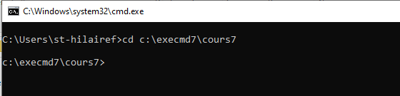Numéro 2.2
Affichez le contenu du dossier.
Réponse
La commande est : dir
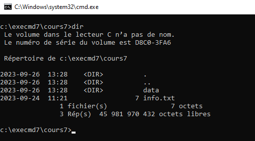Numéro 2.3
Le dossier c:\execmd7\cours7 affiche un dossier et un fichier.
Changez le dossier de travail pour vous déplacer dans le sous-dossier. Il ne faut pas tenir compte des dossiers . et .. (dossier de références).
Utilisez la notation relative.
Réponse
La commande est : cd data
L'élément note.txt est un fichier.
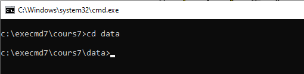Numéro 2.4
2.4.1
Affichez le contenu du dossier.
Réponse
La commande est : dir
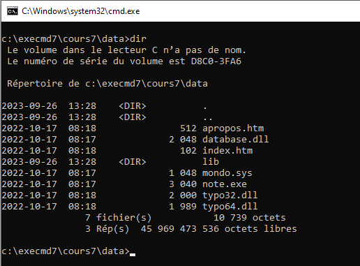2.4.2
Déterminez le nombre de dossiers. Il ne faut pas tenir compte des dossiers . et .. (dossier de références).
Réponse
Il y a 1 dossier.
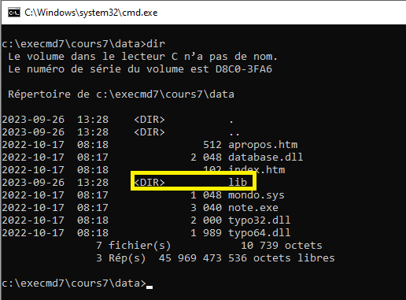2.4.3
Déterminez le nombre de fichiers.
Réponse
Il y a 7 fichiers.
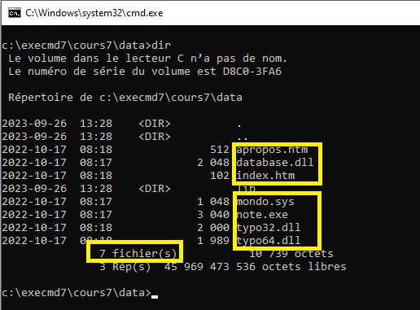2.4.4
Déterminez la taille totale des fichiers en octets.
Réponse
La taille est de 10 739 octets.
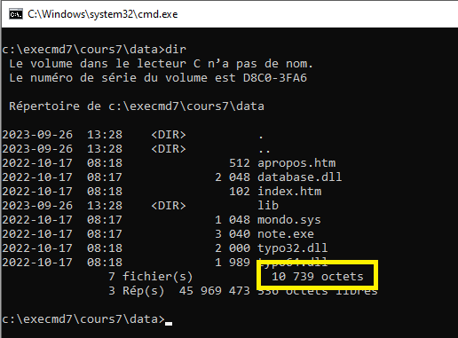2.4.5
Déterminez le fichier qui est le plus gros.
Réponse
Le fichier le plus gros est note.exe.
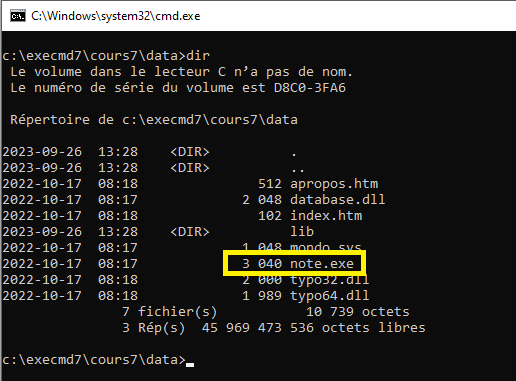Numéro 2.5
Changez le dossier de travail pour c:\execmd7\cours7.
Utilisez la notation relative.
Réponse
La commande est : cd ..
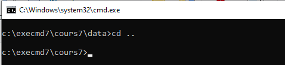Numéro 2.6
Créez le dossier c:\execmd7\copie.
Utilisez la notation relative.
Réponse
La commande est : md ..\copie
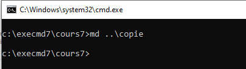Numéro 2.7
Changez le dossier de travail pour le lecteur z .
Réponse
La commande est : z:
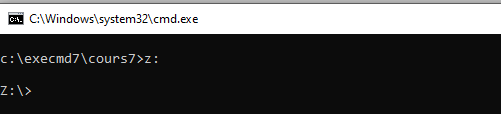Numéro 2.8
Copiez tous les fichiers du dossier z:\ dans le dossier c:\execmd7\copie.
Utilisez la notation relative pour la source et la notation absolue pour la destination.
Réponse
La commande est : copy *.* c:\execmd7\copie
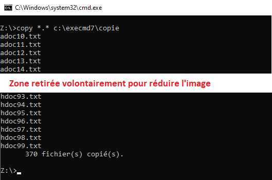Numéro 2.9
Changez le dossier de travail pour c:\execmd7\copie.
Utilisez la notation absolue.
Utilisez 2 commandes
Réponse
La commande #1 est : c:
La commande #2 est : cd c:\execmd7\copie
Il est possible de le faire en une seule commande : cd /d c:\execmd7\copie
Numéro 2.10
Changez le dossier de travail pour c:\execmd7\cours7\data.
Utilisez la notation relative.
Réponse
La commande est : cd ..\cours7\data
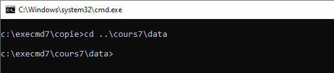Numéro 2.11
Affichez tous les fichiers qui ont l'extension dll.
Réponse
La commande est : dir *.dll
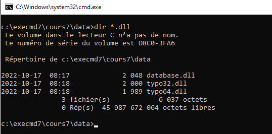Numéro 2.12
Déplacez tous les fichiers qui ont l'extension htm dans le dossier c:\execmd7\cours7\data\html.
Vous devez utiliser 2 commandes.
La commande #1 est pour créer le dossier. Utilisez la notation relative.
La 2e est pour le déplacement. Utilisez la notation relative pour la source et la notation absolue la destination.
Réponse
La commande #1 est : md html
La commande #2 est : move *.htm c:\execmd7\cours7\data\html
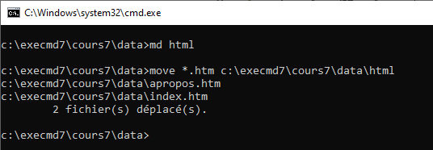Numéro 2.13
Renommez tous les fichiers du dossier qui ont l'extension htm pour html du dossier c:\execmd7\cours7\data\html.
Utilisez la notation absolue.
Réponse
La commande est : ren c:\execmd7\cours7\data\html\*.htm *.html
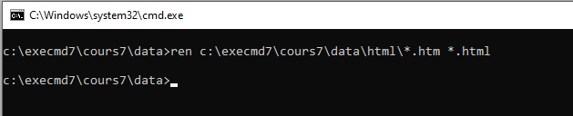Numéro 2.14
Renommez le dossier c:\execmd7\cours7\data\lib pour librairie.
Utilisez la notation relative.
Réponse
La commande est : ren lib librairie
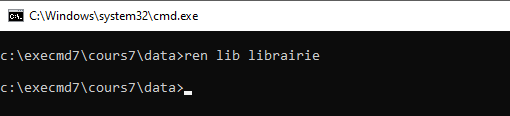Numéro 2.15
Changez le dossier de travail pour c:\execmd7\cours7\data\librairie.
Utilisez la notation relative.
Réponse
La commande est : cd librairie
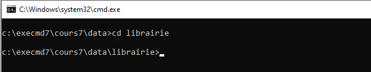Numéro 2.16
Créez une copie de tous les fichiers .lib pour avoir .lib.old comme extension.
Utilisez la notation relative pour la source et la destination.
Réponse
La commande est : copy *.lib *.lib.old
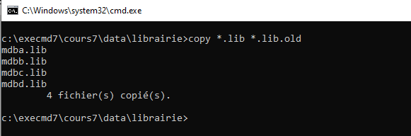Numéro 2.17
Changez le dossier de travail pour c:\execmd7\cours7\data.
Utilisez la notation relative.
Réponse
La commande est : cd ..
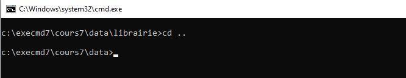Numéro 2.18
Créez une copie de tous les fichiers pour ajouter à leur extension .copy.
Exemple, le fichier database.dll doit avoir une copie database.dll.copy.
Utilisez la notation relative pour la source et la destination.
Réponse
La commande est : copy *.* *.*.copy
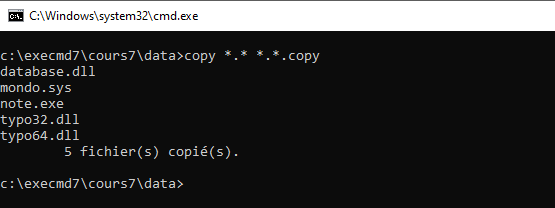Numéro 2.19
Supprimez le dossier c:\execmd7\cours7\data\librairie.
Utilisez la notation relative.
Le dossier contient des fichiers. Il faut utiliser un paramètre additionnel pour permettre la suppression.
Réponse
La commande est : rd librairie /s
Le paramètre /s permet de supprimer le contenu du dossier également.
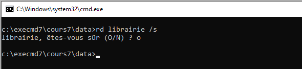Numéro 2.20
Supprimez tous les fichiers du dossier c:\execmd7\cours7\data\html. Le dossier ne doit pas être supprimé.
Utilisez la notation absolue.
Réponse
La commande est : del c:\execmd7\cours7\data\html\*.*
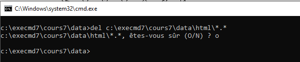2.21. Numéro 21
Créez l'arborescence ci-dessous.
c:\execmd7
├───d1
│ └───d12
│ ├───d131
│ └───d132
└───docs
├───txt
└───word
Utilisez le moins de commandes. Il est possible de le faire en 4 commandes.
Utilisez la notation absolue.
Réponse
La commande #1 est : md c:\execmd7\d1\d12\d131
La commande #2 est : md c:\execmd7\d1\d12\d132
La commande #3 est : md c:\execmd7\docs\txt
La commande #3 est : md c:\execmd7\docs\word
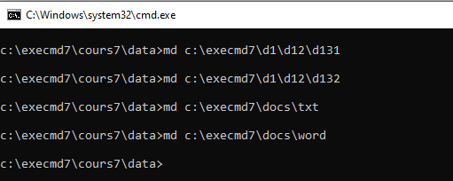3. Métacaractère
Voici des exercices pour les métacaractères.
Changez le dossier de travail pour le lecteur z:\.
![]()
Numéro 3.1
Affichez tous les fichiers qui ont l'extension .txt. Il doit avoir 280 fichiers.
Réponse
La commande est : dir *.txt
Numéro 3.2
Affichez tous les fichiers qui débutent par doc. Il doit avoir 180 fichiers.
Réponse
La commande est : dir doc*
Numéro 3.3
Affichez tous les 10 fichiers de hdoc20.txt à hdoc29.txt.
Les fichiers hdoc200.txt à hdoc209.txt ne doivent pas s'afficher.
Réponse
La commande est : dir hdoc2?.txt
Numéro 3.4
Affichez tous les fichiers qui débutent par adoc et hdoc dans le dossier. Il doit avoir 190 fichiers.
Les fichiers qui débutent par doc ne doivent pas être affichés.
Réponse
La commande est : dir ?doc*
Numéro 3.5
Affichez tous les fichiers qui contiennent le chiffre 3. Il doit avoir 73 fichiers.
Réponse
La commande est : dir *3*
Numéro 3.6
Affichez tous les fichiers que leur nom se termine par le chiffre 8. Il doit avoir 37 fichiers.
Réponse
La commande est : dir *8.*
Numéro 3.6
Affichez tous les fichiers que leur nom ont une longueur de 6 caractères et qui se termine par 2. Il doit avoir 18 fichiers.
Réponse
La commande est : dir ?????2.*
4. Redirection
Vous devez rester dans le dossier de travail z:\.
Numéro 4.1
Affichez tous les fichiers .dll du dossier c:\windows\system32.
La commande pour cet affichage est dir c:\windows\system32\*.dll.
Redirigez le résultat dans le fichier c:\execmd7\num41.txt.
Si le fichier existe, il doit être écrasé.
Réponse
La commande est : dir c:\Windows\System32\*.dll > c:\execmd7\num41.txt
Numéro 4.2
Affichez arborescence du dossier c:\execmd7\cours7 sans les fichiers.
La commande est tree c:\execmd7\cours7.
Affichez arborescence du dossier c:\execmd7\cours7 avec les fichiers.
La commande est tree /F c:\execmd7\cours7.
Redirigez les résultats des 2 commandes dans le fichier c:\execmd7\num42.txt.
Il faut que le résultat des 2 commandes soit dans le même fichier.
Réponse
La commande #1 est : tree c:\execmd7\cours7 >> c:\execmd7\num42.txt
La commande #2 est : tree /F c:\execmd7\cours7 >> c:\execmd7\num42.txt
Numéro 4.3
Créez le fichier c:\execmd7\num43.txt.
Il faut créer ce message dans le fichier.
Je maitrise bien les redirections.
Le cours 1R1 est palpitant !
Il faut faire 2 commandes echo.
Réponse
La commande #1 est : echo Je maitrise bien les redirections. >> c:\execmd7\num43.txt
La commande #2 est : echo Le cours 1R1 est palpitant ! >> c:\execmd7\num43.txt
5. À la maison
Il est possible de faire les exercices à la maison.
Veuillez télécharger le fichier Zip : exercicecours7.zip.
Il faut extraire tout son contenu dans le dossier de votre choix et exécuter le fichier Depart.bat.
Il faut que le lecteur Z: ne soit pas utilisé sur votre ordinateur.